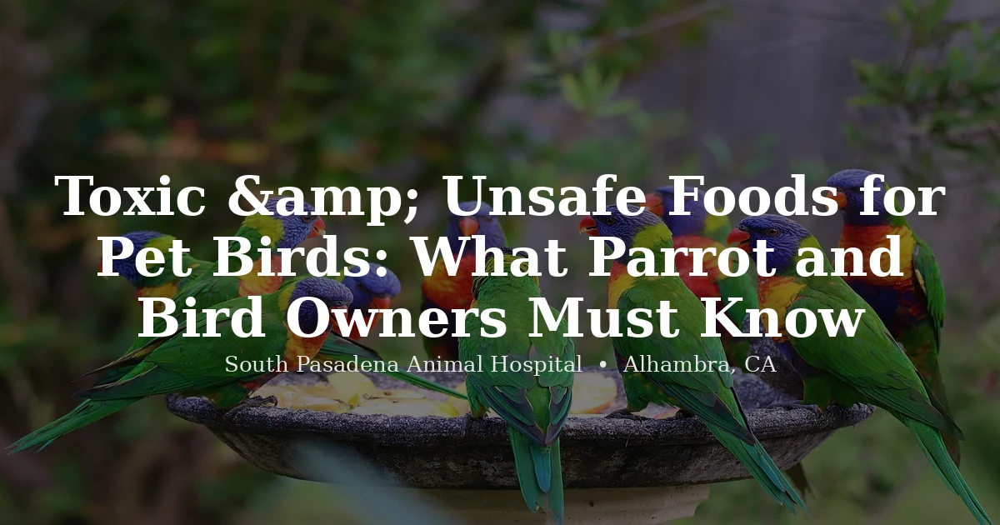

June 13, 2026 · 7 min read
Toxic & Unsafe Foods for Pet Birds: What Parrot and Bird Owners in Alhambra Must Know

Birds are the most metabolically sensitive patients we see. The margin between "fine" and "critical" is much narrower than it is for a dog or cat — a toxin that gives a dog an upset stomach can kill a bird in hours. And because a bird's instinct is to hide illness until it physically can't anymore, by the time you notice something's wrong, it's often already serious.
Food toxicity is one of the most preventable causes of death we see in pet birds, and the worst offenders are things people eat every day at the kitchen table where a bird is happily begging for a bite. Here's what should never reach the beak, why, and what to do if it already has.
Avocado is the one we want every bird owner to memorize
If you remember nothing else from this page, remember this. Persin — the toxin in avocado — runs through the entire plant: flesh, skin, pit, leaves, all of it. In a bird, persin damages cardiac muscle and lets fluid build up around the heart and lungs. We've seen birds go from fine to dead in 12 to 48 hours after real exposure. Guacamole, avocado toast, anything that touched a cut avocado — all off limits, no exceptions, and cooking doesn't neutralize it either. If your bird got into any part of an avocado plant, that's an emergency call, not a wait-and-see.
Onion and garlic do their damage slowly, then all at once
The sulfur compounds in alliums break down red blood cells in birds — raw, cooked, powdered, dehydrated, doesn't matter which form. Garlic powder and onion powder are the most concentrated and the easiest to accidentally drop into a bird's food. Weakness, labored breathing, droppings that look off, and lethargy are what tip us off.
Chocolate and caffeine hit a bird's heart hard, fast
Theobromine and caffeine are compounds a bird simply can't process safely. Even a small taste can bring on vomiting, a racing heart, tremors, and seizures. Darker chocolate carries more theobromine, but we don't consider any form safe. Coffee, tea, energy drinks — same risk, and a bird sipping from an unattended coffee cup may take in a dose that's dangerous relative to its tiny body weight.
Xylitol hides in places owners don't think to check
It's the sweetener in sugar-free gum, candy, certain peanut butters, baked goods, even toothpaste and vitamins. The data on xylitol in birds specifically is thinner than in mammals, but what's documented is enough to keep it away entirely. Check labels for xylitol, birch sugar, or birch bark extract before sharing anything with your bird.
A sip of alcohol does more damage in a bird than you'd guess
Body weight doesn't work in their favor here. A bird has essentially no tolerance for alcohol — an amount that wouldn't faze a person can cause respiratory failure in a bird. Wine, beer, spirits, fermented foods, even certain extracts and sauces with alcohol as an ingredient — keep all of it well out of reach, and never leave a drink unattended near a cage.
Fruit is mostly fine — the pits and seeds are not
Apple, cherry, peach, plum, and apricot pits all carry amygdalin, which the body converts into cyanide. The flesh of those same fruits is generally safe for birds, so the fix is simple: remove every seed and pit before offering fruit, and skip grapes and their seeds altogether.
Salt does quiet damage to a bird's kidneys
A bird's kidneys just aren't built for the sodium levels in processed human food. Chips, crackers, pretzels, canned vegetables, deli meats, seasoned rice — any of these can push a small bird into salt toxicity, showing up as excessive thirst, kidney trouble, or neurological signs. We tell owners to skip processed and seasoned human food for birds entirely, not just the obviously salty stuff.
Mushrooms aren't worth sorting into safe and unsafe
We don't try to identify which mushroom varieties are "okay" for birds, and we'd rather owners didn't either. Plenty of mushrooms considered fine for humans still cause digestive and organ damage in birds, and there's no reliable shortcut to telling them apart. Easiest rule: no mushrooms, period.
Dairy isn't deadly, but it's not a treat either
Cheese and yogurt get offered as treats more than owners realize, and birds simply lack the enzyme to break down lactose. The result is gastrointestinal upset — diarrhea, bloating, real discomfort — not the acute emergency avocado causes, but still something to leave out of the diet entirely.
Raw meat and shellfish carry a bacterial risk we'd rather avoid
Salmonella and E. coli are the concern here. A captive bird's gut flora hasn't been built up the way a wild omnivore's has, so raw protein is a bigger gamble than it sounds. Cooked, unseasoned poultry in small amounts is generally fine — raw meat and shellfish, skip them.
Birds hide illness until they can't. If your bird is fluffed, sitting at the cage bottom, has tail-bobbing breathing, or has gone quiet after eating something questionable — that's an emergency, not a watch-and-wait situation. Call a bird vet immediately. (626) 441-1314
What we actually want to see in the food dish
With a list of dangers this long, it helps to know what we'd rather see instead. A formulated pellet should make up 60 to 70% of most parrots' diets — it gives them balanced nutrition seeds alone can't. Layer in fresh vegetables daily, leafy greens, bell peppers, carrots, broccoli, zucchini, sweet potato. Fruit makes a good occasional addition — apple, mango, papaya, berries, stone fruit flesh — always with seeds and pits removed first. Plain cooked grains like brown rice, quinoa, or oats round things out, and unsalted nuts work fine as an occasional treat.
If you're ever unsure whether something's safe for your specific bird, call your avian vet rather than guess — a large parrot and a small finch don't share the same tolerances. Visit our bird vet page for more on the bird care we provide in Alhambra.
Frequently Asked Questions
What foods are toxic to pet birds?
The most dangerous foods for pet birds include avocado (in any form — flesh, skin, pit, leaves), onion and garlic, chocolate and caffeine, xylitol, alcohol, fruit pits and apple seeds (which contain cyanogenic compounds), salt and heavily processed human food, many types of mushrooms, dairy products, and raw meat or shellfish. Avocado is the single most dangerous food for birds — even small amounts can cause cardiac failure and respiratory distress. Birds have very different metabolisms from mammals, and many foods that are harmless to humans can be rapidly fatal to a bird.
Can birds eat avocado?
No. Avocado is one of the most dangerous foods for birds and should never be offered in any form. The toxic compound is persin, found in the flesh, skin, pit, and leaves of the avocado plant. In birds, persin causes cardiac muscle damage, fluid accumulation around the heart and lungs, respiratory distress, weakness, and death — often within 24–48 hours of significant exposure. There is no known safe amount. If your bird has eaten any part of an avocado plant, treat it as an emergency and contact a bird vet immediately.
Can parrots eat fruit?
Yes, many fruits are safe and nutritious for parrots — with important exceptions. The flesh of apples, pears, berries, mango, papaya, melon, and most stone fruits is generally fine in appropriate amounts. However, you must always remove seeds and pits first. Apple seeds, cherry pits, peach pits, plum pits, and apricot pits all contain amygdalin, a compound that converts to hydrogen cyanide when metabolized. Grapes and their seeds are also best avoided. Citrus is not toxic but is highly acidic and should only be offered in small amounts.
Is chocolate dangerous for birds?
Yes, chocolate is toxic to birds. It contains theobromine and caffeine (methylxanthines), which birds cannot metabolize safely. Even small amounts can cause vomiting, diarrhea, increased heart rate, tremors, seizures, and death. Dark chocolate and baking chocolate contain more theobromine than milk chocolate, but no form of chocolate is safe for birds. Coffee, tea, energy drinks, and other caffeinated foods carry the same risk.
What can I feed my parrot that is safe?
A healthy parrot diet includes a high-quality formulated pellet as the base (pellets should make up roughly 60–70% of the diet), supplemented with fresh vegetables (leafy greens, bell peppers, carrots, broccoli, zucchini), certain fruits (flesh only, no seeds or pits), cooked whole grains (brown rice, quinoa, oats), and small amounts of nuts as treats. Avoid seeds as the primary diet — an all-seed diet is nutritionally deficient. Always introduce new foods gradually and observe your bird's response.
My bird seems sick after eating something — what should I do?
Birds deteriorate very rapidly when ill — a bird that seems "a little off" can become critical within hours. If your bird is fluffed up, sitting at the bottom of the cage, breathing with its tail bobbing, or has stopped eating after a potential exposure to a toxic food, treat it as an emergency. Call a bird vet immediately. Do not wait overnight to see if it improves. South Pasadena Animal Hospital sees pet birds at our Alhambra location — call (626) 441-1314.